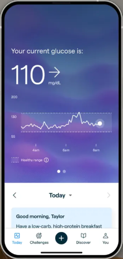

竞品拆解 · 消费级血糖监测（Abbott）
Lingo：血糖数据用健康范围带和参考句表达
来源：App Store 官方截图
2026 年 10 月查看
2026 年 10 月查看

1
授权 · 一屏只问一件事
大标题说明用途，正文一句话 + 隐私说明链接，中间放来源图标；主按钮「连接」，次按钮「以后再说」。

2
今日 · 实时值 + 健康范围
「你当前的血糖是」+ 大数字 + 趋势箭头；曲线上用虚线框画出健康范围；下方早安卡给一条当天建议。标签栏中间是录入「+」。

3
进度 · 标题先说趋势
卡片标题是一句话（「你的日均值在下降」），数字旁给变化幅度，并附一句「典型健康值低于 117」作为参考。
用在本方案：① 授权拆成按需单屏，血糖授权在第一次录入血糖时才请求（W02）；② 异常详情页沿用「健康范围带 + 当前值 + 参考句」的表达（W09）；③ 洞察卡标题统一为一句话趋势（W07、W11）。